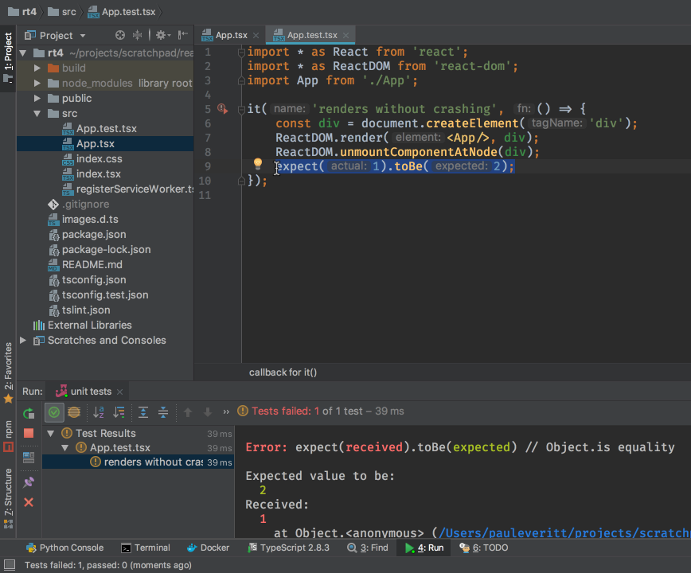

Unit Testing with Jest and Enzyme¶
We saw the Jest test runner in Project Setup. We modified an existing test but didn’t dive into testing.
In this tutorial step we start the process of test driven development. After this step, we’ll develop first in our Jest tests. Then, only at the end, we will look at the app in the browser.
Pretty Jest¶
Previously we ran our Jest tests as a generic npm run script, in the IDE’s npm run tool window. However, PyCharm Professional has a dedicated run configuration type for Jest. It’s a fantastic way to do development. Let’s switch to using that.
Select Run | Edit Configurations, click +, and click on Jest.
Supply a Name: of something like unit tests. The only real field
you need to supply is Jest options:. For that, enter
--env=jsdom --watchAll. This tells Jest to re-run tests when files change
and to use the jsdom package as a fake browser.
{kind=link}
Save that run configuration and run it. Our tests now run in a nice tool window which will make test-driven development (TDD) much more productive.
Fail Faster¶
Let’s see a little testing in action. Open src/App.test.tsx. We’re going to
show the cycle of fail-fix in action. Define two contants, then compare
them with a simple Jest (actually, Jasmine) assertion:
it('renders without crashing', () => {
const div = document.createElement('div');
ReactDOM.render(<App/>, div);
ReactDOM.unmountComponentAtNode(div);
const actual = 1;
const expected = 2;
expect(actual).toBe(expected);
});
When you save this, Jest re-runs your tests, and does so quite fast. Our tests fail, and the IDE’s tool window presents the test results in a very convenient manner. For example, you can jump directly to the line of the failing test.
{kind=link}
Fix the test by changing expected to 1 then save. The Jest watcher
spots the change, re-runs the test very quickly, and shows that all tests
pass.
TDD Basics¶
JavaScript development is usually a bunch of switching between the editor, the browser, the browser console, and a terminal window with the build tools displaying messages. Let’s use a better flow. Let’s stay in the IDE and focus on our code, and observe our code through tests instead of a browser reload.
First, let’s get our code and our tests side-by-side. Press Ctrl-Alt-A and
type in Split Vertically. This gives us a left and right side editor. On
the left, open App.tsx. We can now see class App alongside our tests.
If you need more room, close the Project tool window.
{kind=link}
We often want to jump between our code and our test. The IDE makes this
easy. Cmd-Shift-T moves the cursor between code and test.
A Real Test¶
We currently have a test which makes a document, tells React to render our component-under-test into it, and then…well, nothing really. create-react-app generates a test whose only purpose is to see if it can render. Let’s look inside the rendered result and test its correctness.
To do so, we’re going to install Enzyme, a utility for
React that makes testing feel like jQuery assertions. Open the IDE’s
Terminal tool and install Enzyme and its TypeScript typings:
$ npm install -D enzyme enzyme-adapter-react-16 react-addons-test-utils \
@types/enzyme @types/enzyme-adapter-react-16
We need to tell Jest to use a configured Enzyme. Add this file at
src/setupTests.ts:
import * as Enzyme from 'enzyme'
import * as Adapter from 'enzyme-adapter-react-16'
Enzyme.configure({
adapter: new Adapter(),
});
Restart the Jest run tool window to pickup this setup file. Then, edit
src/App.test.tsx to include a second test:
it('renders the heading', () => {
const wrapper = shallow(<App/>);
expect(wrapper.find('h1').text()).toBe('Hello React');
});
You’ll see shallow in red, meaning it is a TypeScript error, because
shallow hasn’t been imported. Click on shallow and press
Alt-Enter. The IDE automatically generates the correct import.
You can now test the TDD style of development. Try changing the component’s
<h1> to contain different text and save. You’ll see the test fail. Change
it back and save, and the tests pass.
To see real TDD, you write the test first. Add a third test in
src/App.test.tsx:
it('renders the paragraph', () => {
const wrapper = shallow(<App/>);
expect(wrapper.find('p').text()).toBe('Nice TDD');
});
Good news, it fails! TDD starts with a failing test. You then implement what
you expect to pass. Change your App component in src/App.tsx to have
this markup:
<div>
<h1>Hello React</h1>
<p>Nice TDD</p>
</div>
When you save, the test passes. Not only that…you extended your component without looking at a browser.
See Also¶
- https://www.jetbrains.com/help/webstorm/running-unit-tests-on-jest.html
- https://www.jetbrains.com/help/webstorm/run-debug-configuration-jest.html
- https://blog.jetbrains.com/webstorm/tag/jest/
- https://medium.com/kevin-salters-blog/testing-react-with-enzyme-fbfc30190e70
- https://javascriptplayground.com/introduction-to-react-tests-enzyme/
- https://www.codementor.io/vijayst/unit-testing-react-components-jest-or-enzyme-du1087lh8
- https://github.com/Microsoft/TypeScript-React-Starter#typescript-react-starter